Other items
This page showcases items in the collection that don't really fit into any of the other existing pages on the site.
Vintage Italian TV aerial connector
This is an old TV aerial connector, from the 50s/60s, of the "Belling-Lee" style used in Europe (the type F one used in some other parts of the world is generally only used for satellite dishes).
Notably, this uses a female connector, unlike modern ones where the agreed-upon standard is to use a male connector. However, most antenna cables come with an appropriate adaptor for this specific issue.
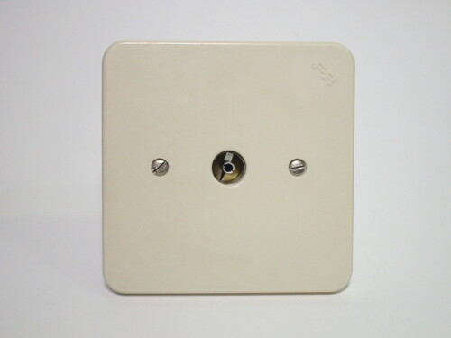 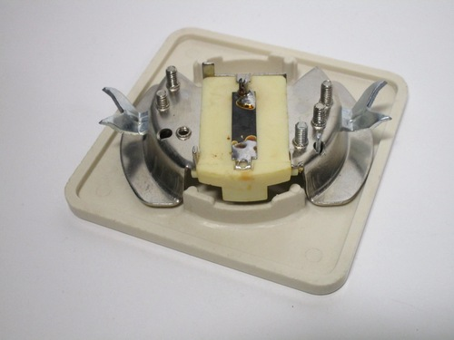 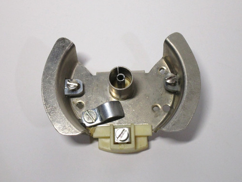{kind=link}
{kind=link}
{kind=link}
German radio aerial connector
This socket from Germany is meant to be wired up to an antenna and used with a radio. Antenna sockets used to be more common back in the day, when televisions were expensive and radios were often used to receive broadcasts from far away.
The connector is polarised - a desirable feature for this sort of use case - with positive and negative symbols present on the faceplate. Undoing the two screws at the front reveals the wire connections and the screw holes for mounting to a wall box.
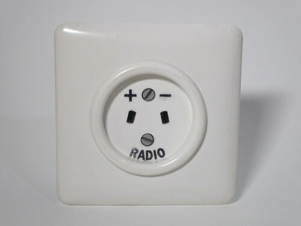 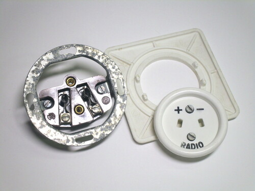 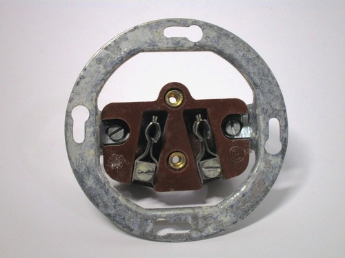{kind=link}
{kind=link}
{kind=link}
Metal-cased isolator switch
This unusual isolator switch was likely used for disconnecting heavier appliances, as indicated by the label inside talking about heaters and motors. Three contacts per side are present, possibly indicating that it could have been used with three-phase loads.
The switch is housed inside a heavy-duty metal casing (with no provision for an earth connection); most notably, the casing is perfectly suitable for use with American light switches, with the mounting holes and front cutout lining up perfectly.
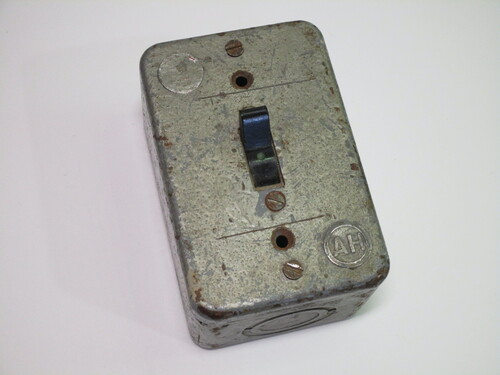 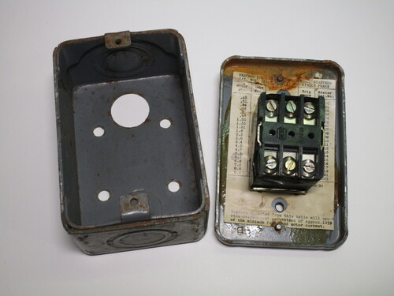 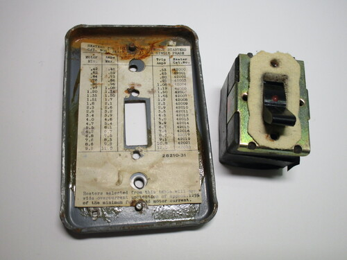{kind=link}
{kind=link}
{kind=link}
Unknown kind of vintage socket
No information is available on this mysterious kind of socket, other than it was patented by "A. Basili, Milano".
It uses the same pin size found on standard plugs of the era, but with a spacing of only around 14-15mm instead of the usual 19.
A shutter mechanism is present, with a spring-loaded disc that covers the contacts. To connect a plug, the pins are used to rotate
the disc which then reveals the contacts. This was a type of mechanism also available on some standard outlets back in the day, though
it was quite rare in Italy.
It's unclear what purpose this plug would have had. The shutter mechanism suggests that it could have been used with some sort of potentially harmful voltage, though as there are no markings on it it's hard to say for sure.
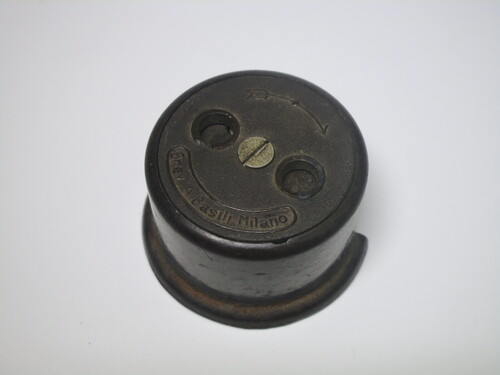 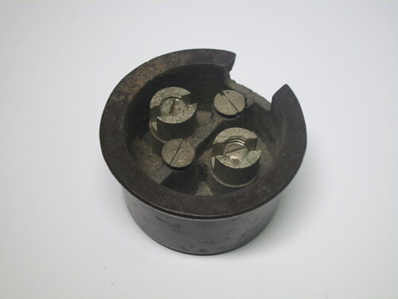{kind=link}
{kind=link}
Mains-powered AEG hour meter
Hour meters are simple devices: once powered up, in this case by mains voltage (200-250V 50Hz), they count the hours they've been powered up for. This is useful for machinery or equipment where something may be required to happen after being used for a certain amount of time - for example, servicing or replacement of components.
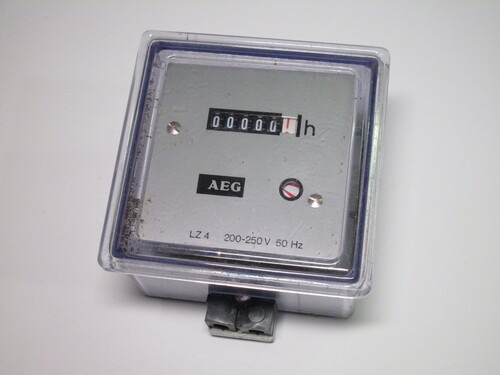 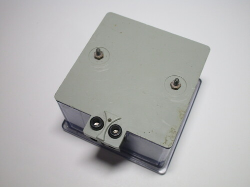{kind=link}
{kind=link}